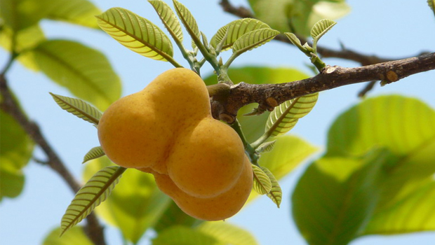
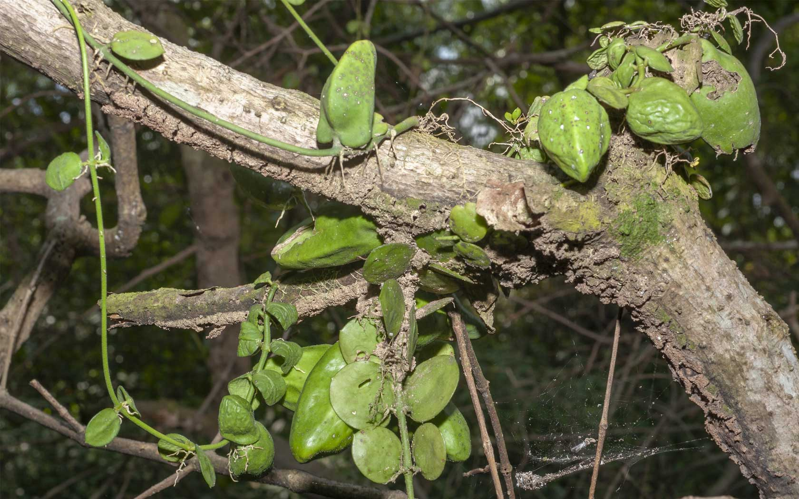

1.ถั่วดินโคก

ถั่วดินโคก
เป็นยาสมุนไพรพื้นบ้านจังหวัดอุบลราชธานี ใช้ ราก ฝนกับน้ำดื่ม ช่วยลดไข้ในเด็ก ฝนทาแก้พิษงู(ต้องว่าคาถาด้วย) ต้มน้ำดื่ม บำรุงน้ำนม (กินมากไม่ดี) ราก เหง้า ลำต้น ใบ ฝนทาฝี
ยาพื้นบ้านอีสาน ใช้ ราก ฝนน้ำทา แก้ฝี
2.เทพทาโร

เทพทาโร
เนื้อไม้ ใช้เป็นยาสมุนไพร รสเผ็ดร้อน กลิ่นหอม แก้จุกเสียด ขับลม
ในล้าไส้ และกระเพาะอาหาร เปลือกเป็นยาบ้ารุงร่างกาย แก้ปวดท้อง ขับลม ท้าให้เรอ บ้ารุงธาตุ
น้ามาฝนกับเปลือกหอยขมและใช้น้้าซาวข้าวเป็นกระสายแก้ไข้ เปลือก เป็นยาบ้ารุงร่างกายอย่างดี
โดยเฉพาะหญิงสาวรุ่น ต้มกินแก้จุกเสียดท้อง ท้องขึ้น ท้องเฟ้อ
ใบ รสเผ็ดร้อนกลิ่นหอม ขับลม บ้ารุงธาตุ แก้แน่นท้อง ท้องอืด ท้องเฟ้อ
ยาง รสร้อน ถ่ายพยาธิ ถ่ายน้้าเหลือง
3.มะตูมนิ่ม

มะตูมนิ่ม
-รากมะตูมรสปร่าชาขื่นเล็กน้อยแก้พิษฝีแก้ไข้แก้ลมหืดหอบไอช่วยบำบัดเสมหะรักษาน้ำดีใบรสฝาดเป็นยา บำรุงธาตุทำให้เจริญอาหาร
แก้โรคลำไส้ แก้ท้องเดินน้ำที่คั้นจากใบใช้แก้หวัดแก้หลอดลมอักเสบผลมะตูมสุก รสหวาน สรรพคุณ แก้ลม แก้เสมหะ แก้มูกเลือด บำรุงไฟธาตุ แก้กระหายน้ำ ขับลมผาย
-ยอดอ่อนและใบอ่อนของมะตูมมีรสเผ็ดร้อน อมฝาด กลิ่นหอม เป็นยาบำรุงธาตุทำให้เจริญอาหารแก้ท้องเดิน ผลมะตูมอ่อน เป็นยาบำรุงธาตุทำให้เจริญอาหาร
แก้ลม แก้เสมหะผลมะตูมแก้สรรพคุณปิดธาตุบำบัดเสลด ขับลม เจริญไฟธาตุ
4.มะหาด

มะหาด
แก่น - ให้ปวกหาด ใช้เป็นยาขับพยาธิตัวตืด และพยาธิไส้เดือน ละลายกับน้ำ ทาแก้ผื่นคัน
แก่นเนื้อไม้ - แก้ขุกแน่น แก้ท้องขึ้นอืดเฟ้อ ขับลม ผายลม แก้ผื่นคัน แก้ตานขโมย เป็นยาระบาย ถ่ายพยาธิไส้เดือนตัวกลม ถ่ายพยาธิเส้นด้าย ถ่ายพยาธิตัวตืด
ขับเลือด แก้ลม ถ่ายพยาธิตัวแบน แก้กระษัย แก้เส้นเอ็นพิการ แก้ท้องผูกไม่ถ่าย
แก่น - แก้โรคกระษัยไตพิการ แก้กระษัยดาน แก้กระษัยเสียด แก้กระษัยกล่อน แก้กระษัยลมพานไส้ แก้กระษัยทำให้ท้องผูก แก้ดวงจิตขุ่นมัว ระส่ำระสาย
แก้นอนไม่หลับ แก้เบื่ออาหาร แก้ร้อนในกระหายน้ำ แก้ปัสสาวะกระปริบกระปรอย ถ่ายพยาธิ พยาธิตัวตืด แก้ท้องโรพุงโต แก้จุกผามม้ามย้อย แก้ฝีในท้อง แก้ปวด แก้เคือง กระจายโลหิต
5.เร่ว

เร่ว
ตำรายาไทย: ผลเร่วน้อย รสร้อนเผ็ดปร่า แก้ไข้ แก้ริดสีดวง แก้หืดไอ เสมหะ แก้ระดูขาว แก้ไข้สันนิบาต เมล็ดเร่วน้อย รสร้อนเผ็ดปร่า
ขับลมในลำไส้ แก้ท้องขึ้น อืดเฟ้อ ปวดท้อง แก้คลื่นเหียน อาเจียน แก้ริดสีดวง หืดไอ กัดเสมหะ แก้ไข้สันนิบาต ขับน้ำนม ผลเร่วใหญ่
รสมันเฝื่อนติดเปรี้ยว แก้ไข้เพื่อดีและเสมหะ แก้ริดสีดวงทวารทั้ง 9 รักษาอาการขัดในทรวง บรรเทาอาการกระหายน้ำ แก้ธาตุพิการ แก้ท้องอืดเฟ้อจุกเสียด
แก้ปวดท้อง แก้มุตกิดระดูขาว แก้หืดไอ แก้เสมหะอันบังเกิดแต่ดี แก้โลหิตขึ้นเบื้องสูง แก้ไข้สันนิบาต ขับผายลม ทำให้เรอ เมล็ดเร่วใหญ่ รสร้อนเผ็ดปร่า
ขับลม แก้ท้องอืดท้องเฟ้อ ขับน้ำนมหลังคลอด แก้ปวดท้อง แก้คลื่นเหียนอาเจียน ลดไขมันในเลือด ลดความเป็นพิษของสารพิษต่อตับ แก้ริดสีดวง หืดไอ ขับเสมหะ แก้ความดันโลหิตต่ำ แก้ไข้สันนิบาต
6.หัวร้อยรู
หัวร้อยรู
ตำรายาไทย: หัวบำรุงหัวใจ ขับชีพจร ขับพยาธิ แก้พิษในข้อในกระดูก แก้พิษประดง แก้ข้อเข่าข้อเท้าบวม รักษามะเร็ง
หัวร้อยรู จัดอยู่ใน “พิกัดมหากาฬทั้ง 5” คือการจำกัดตัวยารักษากาฬ 5 อย่างมี หัวถั่วพู หัวกระเช้าผีมด หัวร้อยรู มหากาฬนกยูง มหากาฬใหญ่
สรรพคุณ ดับพิษร้อน ถอนพิษไข้ แก้พิษอักเสบ ช้ำบวม แก้พิษไข้ ไข้กาฬ ประดงผื่นคัน น้ำเหลืองเสีย
7.กระทุ่มนา
กระทุ่มนา
1. ใบมีรสขมเฝื่อนเมา มีสรรพคุณช่วยลดความดันโลหิตและออกฤทธิ์กดต่อประสาทและกล้ามเนื้อ (ใบ)
2. ยาแผนโบราณของไทยจะใช้ใบกระทุ่มนา (แทนใบกระท่อม) เป็นยาแก้ท้องร่วง ปวดมวนท้อง
ซึ่งมีฤทธิ์เหมือนใบกระท่อม แต่อ่อนกว่า สามารถนำมาใช้แทนกันได้ (ใบ)
3. เปลือกต้นและใบใช้เป็นยาแก้บิดมูกเลือด (เปลือกต้น, ใบ)
4. เปลือกต้นมีรสฝาดร้อน ใช้เป็นยารักษาโรคผิวหนังทุกชนิด แก้มะเร็งคุดทะราด (เปลือกต้น)
8.ขันทองพยาบาท

ขันทองพยาบาท
-ราก รสเมาเบื่อร้อน แก้ลม แก้ประดง แก้พิษในกระดูก แก้โรคผิวหนัง รักษาน้ำเหลืองเสีย
-เปลือกต้น รสเมาเบื่อ แก้ลมเป็นพิษ แก้ประดง แก้พิษในกระดูก ฆ่าพยาธิ แก้โรคเรื้อน มะเร็ง คุดทะราด กลาก เกลื้อน โรคผิวหนังทุกชนิด แก้กามโรค แก้โรคตับพิการ ทำให้ฟันทน ถ่ายน้ำเหลือง
-เนื้อไม้ รสเมาเบื่อ แก้ลมพิษ แก้ไข้ แก้กามโรค
9.จุกโรหินี

จุกโรหินี
– ช่วยลดระดับน้ำตาลในเลือด ด้วยการนำผลมาต้มกับน้ำแล้วดื่ม
– เป็นยาหยอดหูหรือใช้หยอดหูน้ำหนวก ด้วยการนำผลมาดึงไส้ออกแล้วใส่น้ำ จากนั้นนำไปเผาไฟให้อุ่นแล้วเอาน้ำมาหยอดหู
– แก้ลมพันไส้ ด้วยการนำผลมาผสมกับมดแดงฮ้างแล้วต้มกับน้ำเพื่อดื่ม
– ขับลมในกระเพาะอาหาร ด้วยการนำผลมาผสมกับฝอยลมแล้วต้มกับน้ำเพื่อดื่มหรือนำผลมาเผาไฟแล้วเอาน้ำมาดื่มเป็นยาขับลม
10.ชะเอมไทย
ชะเอมไทย
ตำรายาไทย: ใช้ เนื้อไม้ แก้โรคในลำคอ แก้ลม แก้เลือดออกตามไรฟัน บำรุงธาตุและบำรุงกำลัง แก้อ่อนเพลีย บำรุงกล้ามเนื้อให้เจริญ
แก้ไอ
ขับเสมหะ แก้น้ำลายเหนียว ต้น รสหวานเอียน ถ่ายลม แก้โรคในคอ ทำผิวหนังให้สดชื่น แก้โรคตา ราก มีรสหวาน ทำให้ชุ่มคอ
แก้กระหายน้ำ และเป็นยาระบาย มีสรรพคุณแก้ไอ ขับเสมหะ แก้เจ็บคอ แก้โลหิตอันเน่าในอุทร และเจริญซึ่งหทัยวาตให้สดชื่น แก้กำเดาให้เป็นปกติ
11.ชิงชี่

ชิงชี่
ตำรายาไทย รากรสขมขื่น แก้โรคที่เกิดในท้อง ขับลมภายใน แก้ไข้ร้อนในทุกชนิด ไข้พิษ แก้โรคตา โรคกระเพาะ รักษามะเร็ง ช่วยให้มดลูกเข้าอู่
และเป็นยาบำรุงหลังคลอดบุตร แก้ไอเนื่องจากหลอดลมอักเสบ แก้หืด รากชิงชี่ใช้ใน “พิกัดเบญจโลกวิเชียร” (ยาแก้วห้าดวง หรือยาห้าราก)
ซึ่งได้จากรากไม้ 5 ชนิดคือ รากชิงชี่ รากคนทา รากเท้ายายม่อม รากมะเดื่อชุมพร และรากย่านาง มีสรรพคุณ แก้ไข้ต่างๆ กระทุ้งพิษหรือถอนพิษต่างๆ
รากและใบ ใช้ภายนอก ตำพอกแก้ฟกบวม ทั้งต้น รสขื่นปร่า ตำพอกแก้ฟกช้ำ บวม แก้ไข้ ขับน้ำเหลืองเสีย
12.ตับเต่า

ตับเต่า
-ตำรับยาไทยมักใช้ร่วมกับตับเต่าน้อย (ชื่อวิทยาศาสตร์ Polyalthia debilis (Pierre) Finet & Gagnep วงศ์ ANNONACEAE) เรียกว่า
“ตับเต่าทั้งสอง” แก่นและรากใช้ต้มหรือฝนกินเป็นยาแก้ไข้ ลดไข้ ดับพิษร้อน แก้ร้อนใน แก้พิษไข้ แก้พิษทั้งปวง (แก่น, ราก)
-แก่นและรากมีรสฝาดเอียนเล็กน้อย ใช้เป็นยาแก้วัณโรค ด้วยการนำมาต้มกับน้ำกิน
-เปลือกใช้เป็นยารักษาโรครำมะนาด (เปลือกต้น)
13.นางแย้มป่า

นางแย้มป่า
-สรรพคุณจากใบ: แก้อาการปวดศีรษะข้างเดียว ด้วยการนำใบมาซ้อนกัน 3 ใบ หรือ 7 ใบ แล้วใช้ห่อขี้เถ้าร้อน ใบฮ่อมตำและใบเครือเขาน้ำตำ แล้วนำมาประคบศีรษะ
-สรรพคุณจากราก รักษาลำไส้อักเสบ ช่วยขับปัสสาวะ แก้ไตพิการ: เป็นยาแก้ไข้ บำรุงน้ำนมของสตรี ด้วยการนำรากมาต้มแล้วดื่ม
14.ปลาไหลเผือก

ปลาไหลเผือก
-ตำรายาไทย: ใช้ ราก รสขม เบื่อเมาเล็กน้อย ถ่ายพิษต่างๆ ถ่ายฝีในท้อง ถ่ายพิษไข้พิษเสมหะ และโลหิต แก้ไข้ แก้ไข้มาลาเรีย ตัดไข้ทุกชนิด แก้ลม
แก้วัณโรคระยะบวม ขับเหงื่อ ขับพยาธิ แก้ต่อมทอนซิลอักเสบ แก้เจ็บคอ ความดันเลือดสูง อัมพาต ขับถ่ายน้ำเหลือง แก้ท้องผูก
- ยาสมุนไพรพื้นบ้านจังหวัดอุบลราชธานี: ใช้ ราก ต้มน้ำดื่ม แก้ไข้ ฝนน้ำดื่ม แก้ปวดท้อง
ราก นำไปเข้ายาบำรุงกำลัง นำรากผสมกับรากโลดทะนงแดง และพญาไฟ ฝนน้ำดื่ม แก้ไข้ ใช้เลิกเหล้า รากผสมรากย่านางแดง และพญายา ฝนน้ำกินขับพิษ รากผสมกับรากโลดทะนงแดงและพญาไฟ ฝนน้ำกิน ทำให้อาเจียน ใช้เลิกเหล้า
นอกจากนั้นยังใช้เป็นส่วนประกอบในตำรับยาแผนโบราณ ได้แก่ “ยาสามราก” (ประกอบด้วยรากพืช 3 ชนิดคือ รากโลดทะนง รากฮังฮ้อน และรากปลาไหลเผือก)
ทำให้อาเจียน และถ่าย ใช้ล้างพิษยาเสพติด ใช้บำบัดผู้ที่ติดยาเสพติด และแก้อาการลงแดงจากยาเสพติด โดยยานี้จะทำให้อาเจียน และถอนพิษยา
15.พังคี

พังคี
หมอยาพื้นบ้านจังหวัดอุบลราชธานี ใช้ ราก ต้มน้ำดื่ม หรือฝนทา แก้ท้องอืด ท้องเฟ้อ ในเด็ก หรือตำประคบ แก้ปวด
ตำรายาไทย ใช้ ราก ซึ่งมีรสเผ็ด ขื่น เฝื่อนเล็กน้อย และมีกลิ่นหอม แก้ท้องขึ้น ปวดแน่นท้อง หรือใช้ภายนอกโดยฝนกับน้ำปูนใส ผสมกับมหาหิงคุ์และการบูรทาท้องเด็กอ่อน
ทำให้ผายลม แก้ท้องอืดเฟ้อ แก้ปวดท้อง ราก ผสมกับรากส่องฟ้าดง ต้มน้ำดื่ม แก้จุกเสียด แก้ท้องอืด ผสมกับสมุนไพรอื่นอีก 34 ชนิด ต้มน้ำดื่ม
16.มะคังแดง

มะคังแดง
-ยาสมุนไพรพื้นบ้านจังหวัดอุบลราชธานี ใช้ เปลือกต้น เข้ายากับมุ่ยขาว ทำเป็นลูกกลอน แก้ปวดเส้นเอ็น อัมพฤกษ์ อัมพาต แก้ริดสีดวงทวาร
แก่น ต้มน้ำดื่มแก้ปวดเมื่อย แก้ปวดประจำเดือน แก่นผสมกับมุ่ยขาว มุ่ยแดง หนามแท่ง เล็บแมว เงี่ยงปลาดุก รักษาโรคกระเพาะอาหาร มะเร็ง
- ยาพื้นบ้าน ใช้ ต้น ต้มน้ำดื่ม แก้เลือดลมเดินไม่สะดวก ผสมกับหัวยาข้าวเย็น ต้มน้ำดื่มแก้ไตพิการ (โรคเกี่ยวกับทางเดินปัสสาวะ มีปัสสาวะขุ่นข้น
เหลืองหรือแดง มักมีอาการแน่นท้อง กินอาหารไม่ได้) แก้ปวดท้อง ขับพิษโลหิต และน้ำเหลือง เปลือกต้น ตำพอกแผลสด ห้ามเลือด ราก เป็นยาถ่าย
17.สะค้าน

สะค้าน
-ตำรายาไทย เถา รสเผ็ดร้อน ขับลมในลำไส้ แก้แน่น แก้จุกเสียด บำรุงธาตุ ทำให้ผายเรอ และใช้ปรุงยาธาตุ แก้ธาตุพิการ เป็นตัวยาประจำธาตุลม
- บัญชียาจากสมุนไพร: ที่มีการใช้ตามองค์ความรู้ดั้งเดิม ตามประกาศคณะกรรมการพัฒนาระบบยาแห่งชาติ ในบัญชียาหลักแห่งชาติ ระบุการใช้สะค้านในตำรับ
“ยาเบญจกูล” มีส่วนประกอบของเถาสะค้านร่วมกับสมุนไพรชนิดอื่นๆ ในตำรับ มีสรรพคุณบรรเทาอาการท้องอืด ท้องเฟ้อ บำรุงธาตุ แก้ธาตุให้ปกติ
18.สารภีป่า

สารภีป่า
1.ดอกมีสรรพคุณเป็นยาบำรุงหัวใจ (ดอก)
2.ตำรายาไทยจะใช้เปลือกและดอกเป็นยาแก้ไข้ (ดอก, เปลือกและดอก)
3.ดอกมีสารช่วยขยายหลอดลม และช่วยขับลม (ดอก)
4.เปลือกและดอกมีสรรพคุณเป็นยาแก้บิด (เปลือกและดอก)
5.ใช้เป็นยาถ่ายพยาธิ (เปลือกและดอก)
19.อบเชยไทย

อบเชยไทย
ตำรายาไทย: น้ำต้มเปลือกต้น ดื่มแก้ตับอักเสบ อาหารไม่ย่อย แก้ท้องเสีย ลำไส้เล็กทำงานผิดปกติ ขับพยาธิ มีสรรพคุณบำรุงดวงจิต
แก้อ่อนเพลีย ชูกำลัง ขับผายลม บำรุงธาตุ แก้บิด แก้ลมอัณฑพฤกษ์ แก้ไข้สันนิบาต ใช้ปรุงเป็นยานัตถุ์แก้ปวดหัว รับประทานแก้เบื่ออาหาร
แก้จุกเสียด แน่นท้อง อาหารไม่ย่อย แก้ไอ แก้ไข้หวัด ลำไส้อักเสบ ท้องเสียในเด็ก อาการหวัด ปวดปะจำเดือน แก้อ่อนเพลีย คลื่นไส้อาเจียน แก้ปวดประจำเดือน ห้ามเลือด บดเป็นผงโรยแผลกามโรค สมานแผล
อบเชยมีการนำมาใช้ในพิกัดยาไทย คือ “พิกัดตรีธาตุ” ประกอบด้วย กระวาน ดอกจันทน์ และอบเชย เป็นยาแก้ธาตุพิการ แก้ลม แก้เสมหะ แก้ไข้
“พิกัดตรีทิพย์รส” คือการจำกัดจำนวนของที่มีรสดี 3 อย่าง คือโกฐกระดูก เนื้อไม้ และอบเชยไทย มีสรรพคุณบำรุงธาตุ บำรุงกระดูก บำรุงตับปอดให้เป็นปกติ
แก้ลมในกองเสมหะ บำรุงโลหิต “พิกัดจตุวาตะผล” คือการจำกัดจำนวนตัวยาแก้ลม ประกอบด้วยผล 4 อย่าง คือ เหง้าขิงแห้ง กระลำพัก อบเชยเทศ และโกฐหัวบัว
20.เฉียงพร้านางแอ

เฉียงพร้านางแอ
ตำรายาไทย: น้ำต้มเปลือกต้น ดื่มแก้ตับอักเสบ อาหารไม่ย่อย แก้ท้องเสีย ลำไส้เล็กทำงานผิดปกติ ขับพยาธิ มีสรรพคุณบำรุงดวงจิต
แก้อ่อนเพลีย ชูกำลัง ขับผายลม บำรุงธาตุ แก้บิด แก้ลมอัณฑพฤกษ์ แก้ไข้สันนิบาต ใช้ปรุงเป็นยานัตถุ์แก้ปวดหัว รับประทานแก้เบื่ออาหาร
แก้จุกเสียด แน่นท้อง อาหารไม่ย่อย แก้ไอ แก้ไข้หวัด ลำไส้อักเสบ ท้องเสียในเด็ก อาการหวัด ปวดปะจำเดือน แก้อ่อนเพลีย คลื่นไส้อาเจียน แก้ปวดประจำเดือน ห้ามเลือด บดเป็นผงโรยแผลกามโรค สมานแผล
อบเชยมีการนำมาใช้ในพิกัดยาไทย คือ “พิกัดตรีธาตุ” ประกอบด้วย กระวาน ดอกจันทน์ และอบเชย เป็นยาแก้ธาตุพิการ แก้ลม แก้เสมหะ แก้ไข้
“พิกัดตรีทิพย์รส” คือการจำกัดจำนวนของที่มีรสดี 3 อย่าง คือโกฐกระดูก เนื้อไม้ และอบเชยไทย มีสรรพคุณบำรุงธาตุ บำรุงกระดูก บำรุงตับปอดให้เป็นปกติ
แก้ลมในกองเสมหะ บำรุงโลหิต “พิกัดจตุวาตะผล” คือการจำกัดจำนวนตัวยาแก้ลม ประกอบด้วยผล 4 อย่าง คือ เหง้าขิงแห้ง กระลำพัก อบเชยเทศ และโกฐหัวบัว
21.เถาเอ็นอ่อน

เถาเอ็นอ่อน
ตำรายาไทย: ใช้ เถา ต้มดื่มบำรุงเส้นเอ็นให้แข็งแรง แก้เส้นเอ็นพิการ เส้นแข็ง แก้ปวดเมื่อยเส้นเอ็น แก้ขัดยอก ทำให้คลายการตึงตัว
เป็นสมุนไพรที่มีการนำมาใช้ในสูตรยาอบสมุนไพรเพื่อสุขภาพ โดยใช้เป็นส่วนประกอบเพิ่มเติมจากสูตรยาอบสมุนไพรหลัก เมื่อต้องการอบเพื่อรักษาอาการปวดเมื่อย ปวดหลัง ปวดเอว เป็นต้น
22.เฉียงพร้านางแอ

เปราะหอม
ตำรายาไทย หัวใต้ดิน รสเผ็ดขม สุมศรีษะเด็ก แก้หวัดคัดจมูก รับประทานขับลมในลำไส้ แก้เสมหะ เจริญไฟธาตุ แก้ลงท้อง แก้โลหิตซึ่งเจือด้วยลมพิษ
บัญชียาจากสมุนไพร: ที่มีการใช้ตามองค์ความรู้ดั้งเดิม ตามประกาศ คณะกรรมการแห่งชาติด้านยา ระบุการใช้เหง้าเปราะหอม ในยารักษากลุ่มอาการทางระบบทางเดินอาหาร
แหล่งอ้างอิง